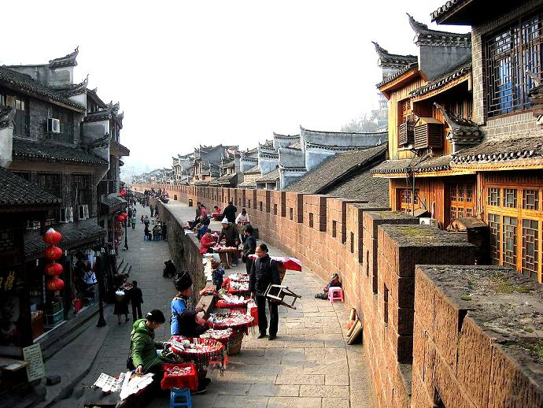
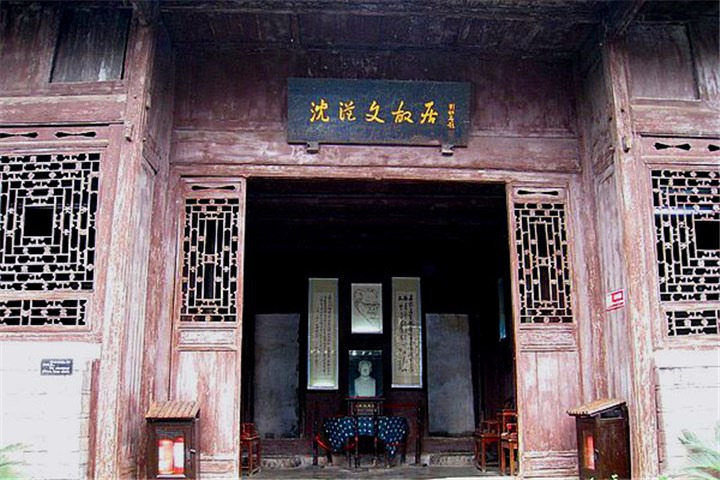

凤凰古城以回龙阁古街为中轴，连接无数的石板小巷，沟通全城。回龙阁古街是一条纵向随势成线、横向交错铺砌的青石板路，自古以来便是热闹的集市。
1902年12月28日，沈从文先生诞生在凤凰古城中营街的一座典型的南方古四合院里。四合院是沈从文先生的祖父沈宏富（曾任清朝贵州提督）于同治五年(1866年）购买旧民宅拆除后兴建的，镂花的门窗，小巧别致，古色古香。
沈从文故居是已有百余年历史，是清朝晚期建筑，建成了沈从来生平事迹的展览室。沈从文故居是旅游景区中人文景观的最耀眼点。


返回主页